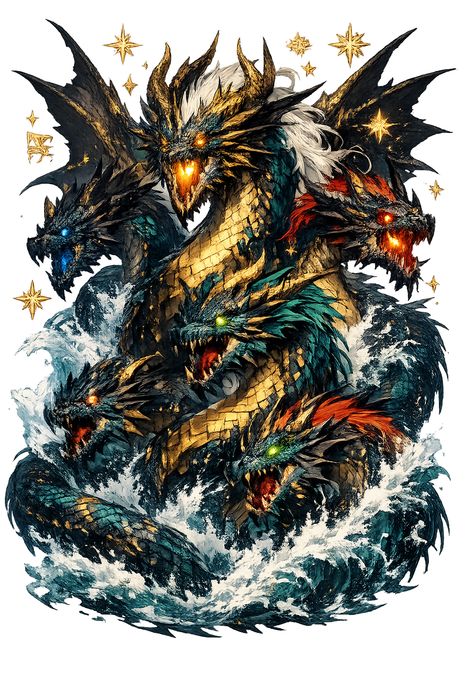

Unicode restoration and ASCII comparison
𒀭𒋾𒊩𒆳
The name in its original Mesopotamian form. Tiāmat (𒀭𒋾𒊩𒆳) is attested in the source tradition — “Sea”. Its macron-length vowels carry the full phonetic and orthographic weight of the source tradition.
tiamat
Reduced to plain tiamat, the name loses everything that made it specific: macron-length vowels. What remains is an ASCII string that machines can parse but that no longer speaks with its original voice.
Tiāmat
The Unicode restoration recovers what ASCII flattened. Tiāmat restores macron-length vowels, returning the name to its original written dignity. The domain encodes to Punycode, but the browser displays the truth.
Tiāmat.com → xn--timat-gwa.com
The non-ASCII characters in Tiāmat are encoded while the ASCII remains visible. To the DNS, it is Punycode. To humanity, it is Tiāmat.
How Tiāmat travels from ancient script to the modern URL
Akkadian tiāmtu “sea, ocean"; Tiāmat personifies the primordial salt-water abyss and is the antagonist of Marduk in the Enūma Eliš.
Salt Water, Chaos
The Unicode restoration Tiāmat preserves vowel length; the cuneiform form is not registrable in .com.
How Tiāmat was spoken
Attributes of Tiāmat
The restless sea, the deep, and the life that teems beneath the surface.
A weapon and emblem of dominion over rivers, storms, and earthquakes.
Stories of Tiāmat
Shrines, festivals, and votive offerings across the mesopotamian world invoked Tiāmat as salt water, chaos. Worshippers did not simply tell stories about this power; they enacted it through sacrifice, song, and the careful observance of ritual. The name was a password: to speak it correctly was to align oneself with the force it named.
Poets and priests wove Tiāmat into hymns, genealogies, and mythic narratives. Whether as a major protagonist or a background power, the name carried a charge that later authors returned to again and again. Each retelling adjusted the portrait, but the core identity — salt water, chaos — remained recognizable.
After the temples fell silent, the name lived on in language, art, and the names of places and stars. It entered classical education, romantic poetry, and modern fantasy. To restore Tiāmat in Unicode is not nostalgia; it is the recognition that a name with this much history still has work to do.
The lore you have read is the surface — the living myth. Beneath it lies the scholarship: etymology, reconstructed pronunciation, Unicode character breakdown, and the cultural legacy of Tiāmat.
Enter Extended Lore